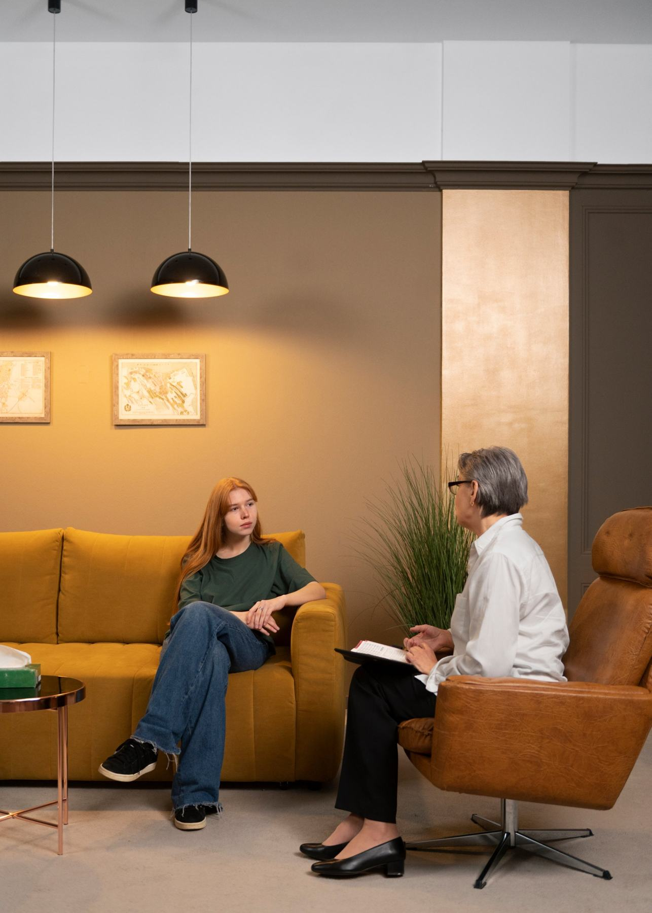

Whole-person care, rooted in nature.
Comprehensive psychiatric evaluation and treatment for adolescents and adults: collaborative, strength-based, and guided by the restorative power of the natural world.
Strengths first. Always.
We are spiritual, physical, intellectual and emotional beings, created for meaningful relationships. That belief shapes a holistic, integrated, collaborative approach: a thorough diagnostic assessment that names the challenges but, more importantly, reveals the strengths and protective factors already within you.
Meet Debra
Care for every stage of life
Adolescent
Evaluation and family-driven treatment for anxiety, inattention, hyperactivity and mood or behavioral dysregulation.
Read more → 02Adult
Support through life transitions, anxiety, depression and attention challenges, toward recovery and resilience.
Read more → 03Autism Spectrum
Careful evaluation of high-functioning autism that is often missed, then a treatment plan built around it.
Read more → 04Coaching
Caregiver coaching and community-based life and social skills coaching.
Read more →A path built around you
Comprehensive evaluation
A diagnostic assessment that identifies areas of challenge and, above all, your strengths.
A personal treatment plan
Developed from the evaluation with a client-centered, family-driven approach.
Collaborative healing
Support for the individual and their loved ones along the healing journey.
Let nature hold your attention
Ecotherapy and forest bathing give the mind something gentle to focus on: birdsong, the scent of pine, warmth of the sun.
Discover nature therapyHappiness isn’t something that depends on our surroundings, it’s something we make inside ourselves.Corrie Ten Boom

Begin when you are ready
Reach out by email or phone. The practice will help you take the first step.